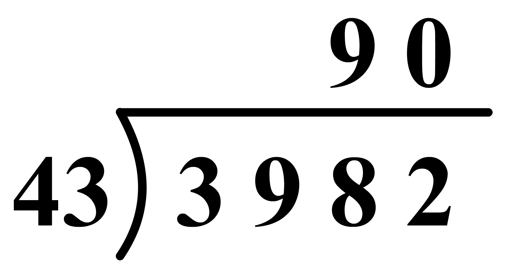

Objective:
Divide Integers and Estimate Quotients
Dividing two integers with unlike signs
☜
✔
Dividing two integers with like signs
☜
✔
Division facts
☜
✔
Estimating quotients
☜
✔
Recall that
division is the inverse process of multiplication
.
To find the quotient
– 15 ÷ 3
or
– 15
/
3
means to find the missing factor in
3 · ( ? ) = – 15
.
Since,
3 ( – 5 )
=
– 15
therefore,
– 15 ÷ 3
=
– 5
Similarly,
48
/
– 6
=
– 8
because the missing factor in the product
(– 6 ) ( ? ) = 48
is
– 8
.
Observe that the quotient of a positive and a negative number is the negative of the quotient of their absolute values
.
We already know how to divide two positive numbers.
The quotient of two positive numbers is always positive
.
Let us consider the division of two negative numbers, say
– 12
and
– 4
.
– 12
/
– 4
=
3
because the missing factor in
( - 4 ) ( ? ) = – 12
is
3
.
Observe that
3
is positive
and this is the quotient of the absolute values of
– 12
and
– 4
.
When we divide two numbers with like signs, the quotient is positive, and is the same as the quotient of their absolute values
.
We conclude the discussion by observing the following facts about division :
(
a
)
The divisor is always a non-zero number. Remember, we cannot divide any number by
0.
Division by
0
is undefined
;
example
:
– 10
/
0
is undefined.
(
b
)
For any integer
a
,
a
/
1
=
a
;
example
:
– 10
/
1
= – 10
(
c
)
For any integer
a
,
a
≠ 0,
0
/
a
= 0
;
example
:
0
/
– 10
= 0
No rounding is needed in order to obtain a good estimate of a quotient
.
Carefully locate the position of the first digit in the quotient.
Enter that digit or a close guess of its value.
Fill in the remaining places with zeros.

43 × 9 = 387
3982 ÷ 43 =
3982
/
43
≈
90
The actual quotient
92
R 26
is very close.